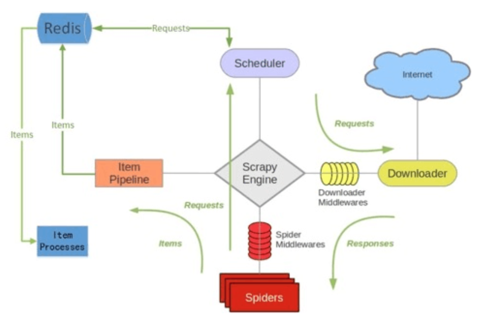

Scrapy 和 scrapy-redis的区别
Scrapy 是一个通用的爬虫框架，但是不支持分布式，Scrapy-redis是为了更方便地实现Scrapy分布式爬取，而提供了一些以redis为基础的组件(仅有组件)。
pip install scrapy-redis
Scrapy-redis提供了下面四种组件（components）：(四种组件意味着这四个模块都要做相应的修改)
SchedulerDuplication FilterItem PipelineBase Spider
scrapy-redis架构

如上图所⽰示，scrapy-redis在scrapy的架构上增加了redis，基于redis的特性拓展了如下组件：
Scheduler：
Scrapy改造了python本来的collection.deque(双向队列)形成了自己的Scrapy queue(https://github.com/scrapy/queuelib/blob/master/queuelib/queue.py))，但是Scrapy多个spider不能共享待爬取队列Scrapy queue， 即Scrapy本身不支持爬虫分布式，scrapy-redis 的解决是把这个Scrapy queue换成redis数据库（也是指redis队列），从同一个redis-server存放要爬取的request，便能让多个spider去同一个数据库里读取。
Scrapy中跟“待爬队列”直接相关的就是调度器Scheduler，它负责对新的request进行入列操作（加入Scrapy queue），取出下一个要爬取的request（从Scrapy queue中取出）等操作。它把待爬队列按照优先级建立了一个字典结构，比如：
{
优先级0 : 队列0
优先级1 : 队列1
优先级2 : 队列2
}
然后根据request中的优先级，来决定该入哪个队列，出列时则按优先级较小的优先出列。为了管理这个比较高级的队列字典，Scheduler需要提供一系列的方法。但是原来的Scheduler已经无法使用，所以使用Scrapy-redis的scheduler组件。
Duplication Filter
Scrapy中用集合实现这个request去重功能，Scrapy中把已经发送的request指纹放入到一个集合中，把下一个request的指纹拿到集合中比对，如果该指纹存在于集合中，说明这个request发送过了，如果没有则继续操作。这个核心的判重功能是这样实现的：
def request_seen(self, request):
# 把请求转化为指纹
fp = self.request_fingerprint(request)
# 这就是判重的核心操作 ，self.fingerprints就是指纹集合
if fp in self.fingerprints:
return True #直接返回
self.fingerprints.add(fp) #如果不在，就添加进去指纹集合
if self.file:
self.file.write(fp + os.linesep)
在scrapy-redis中去重是由Duplication Filter组件来实现的，它通过redis的set 不重复的特性，巧妙的实现了Duplication Filter去重。scrapy-redis调度器从引擎接受request，将request的指纹存⼊redis的set检查是否重复，并将不重复的request push写⼊redis的 request queue。
引擎请求request(Spider发出的）时，调度器从redis的request queue队列⾥里根据优先级pop 出⼀个request 返回给引擎，引擎将此request发给spider处理。
Item Pipeline：
引擎将(Spider返回的)爬取到的Item给Item Pipeline，scrapy-redis 的Item Pipeline将爬取到的 Item 存⼊redis的 items queue。
修改过Item Pipeline可以很方便的根据 key 从 items queue 提取item，从⽽实现 items processes集群。
Base Spider
不在使用scrapy原有的Spider类，重写的RedisSpider继承了Spider和RedisMixin这两个类，RedisMixin是用来从redis读取url的类。
当我们生成一个Spider继承RedisSpider时，调用setup_redis函数，这个函数会去连接redis数据库，然后会设置signals(信号)：
一个是当spider空闲时候的signal，会调用spider_idle函数，这个函数调用
schedule_next_request函数，保证spider是一直活着的状态，并且抛出DontCloseSpider异常。一个是当抓到一个item时的signal，会调用item_scraped函数，这个函数会调用
schedule_next_request函数，获取下一个request。